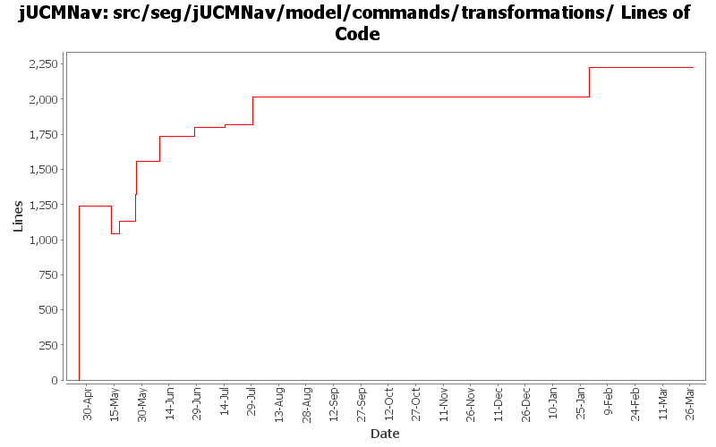

Summary Period: 2005-04-25 to 2006-03-27
[root]/src/seg/jUCMNav/model/commands/transformations
 internal
(4 files, 488 lines)
internal
(4 files, 488 lines)

Total Lines Of Code:
2224 (2006-03-31 18:01)
| Author | Changes | Lines of Code | Lines per Change |
|---|---|---|---|
| Totals | 184 (100.0%) | 2416 (100.0%) | 13.1 |
| etremblay | 31 (16.8%) | 1413 (58.5%) | 45.5 |
| jkealey | 85 (46.2%) | 598 (24.8%) | 7.0 |
| jfroy | 42 (22.8%) | 206 (8.5%) | 4.9 |
| jpdaigle | 25 (13.6%) | 199 (8.2%) | 7.9 |
| jmcmanus | 1 (0.5%) | 0 (0.0%) | 0.0 |
bug 341: automatic update of pluginbinding properties
0 lines of code changed in:
Created command test cases for GRL
Fixed bug when saving Evaluation and LinkRef
0 lines of code changed in:
Externalize String
0 lines of code changed in:
Added labels in commands
0 lines of code changed in:
Fixed bug with Actor label (changing name when editing label value)
0 lines of code changed in:
Merge of GRL branch with the main trunk
206 lines of code changed in:
Extracted a bunch of strings, translated language files to French.
0 lines of code changed in:
Merge grl branch with the main trunk
Major modification of the metamodel (URN_08.mdl) (Added GRL metamodel, New interfaces that define common element in GRL and UCM, Modified UCM-Map package to implement the new interfaces (some associations and attributes have been refactored using the interfaces), Map is now called UCMmap (to resolve conflict with java.util.map in the implementation), Removed Path Graph)
Modification of the code that used the metamodel.
Started modification of jUCMNav to support GRL.
0 lines of code changed in:
bugs 372 - 378 - 380 - 379 - 273 - 375 - massive changes in deletion command infrastructure. mainly refactoring but also various functionality additions
also committing minor changes to the twiki plugin created by JFRoy and an ant script to generate javadoc on a windows machine.
202 lines of code changed in:
Lesson learned... Never try to make an SWT application in 3.1 for 3.0.... The layout won't work like you designed it in 3.1...
Added condition editing in the StubBindingDialog. Quick hack to take what was working in the 3.1 version done during the day and add it to the 3.0 version. The layout is not as nice though in 3.0.
0 lines of code changed in:
cleaned/documented seg.jUCMNav.model.commands.transformations.*; filed bugs for some classes, created a few tests.
20 lines of code changed in:
Cleaned/documented seg.jUCMNav.model.commands.create;
0 lines of code changed in:
cleaned a bit of seg.jUCMNav.model.commands.create; replaced four 200+ line classes by one 34 line one.
0 lines of code changed in:
JP: javadoc improvements on private-visibility methods
0 lines of code changed in:
stupid crappy wizard always breaking the same file.
bug 338 - bold+italic
bug 336 - colors
bug 339 - can replace direction arrow as well
0 lines of code changed in:
bug in extract string wizard erased two strings;
bug 339 - can now insert from palette onto empty point (4 line compound command)
59 lines of code changed in:
bug 324 - lost name/description/label with transmogrify
0 lines of code changed in:
bug 320 - loops; to investigate: given this preliminary version, what is okay, what is not. I think it looks pretty good but I haven't tested everything thoroughly. I know that it is too restrictive concerning paths that have a stub that should be considered to contain a start/end point, but for simplicity's sake, I think the workarounds are sufficient.
0 lines of code changed in:
Delete of PluginBindings In/OutBindings should now be handled in all the situations where they should be deleted that I know of...
It think my code is now "beta ready".
0 lines of code changed in:
autolayout + connect bug
0 lines of code changed in:
(43 more)
Generated by StatCVS 0.2.4